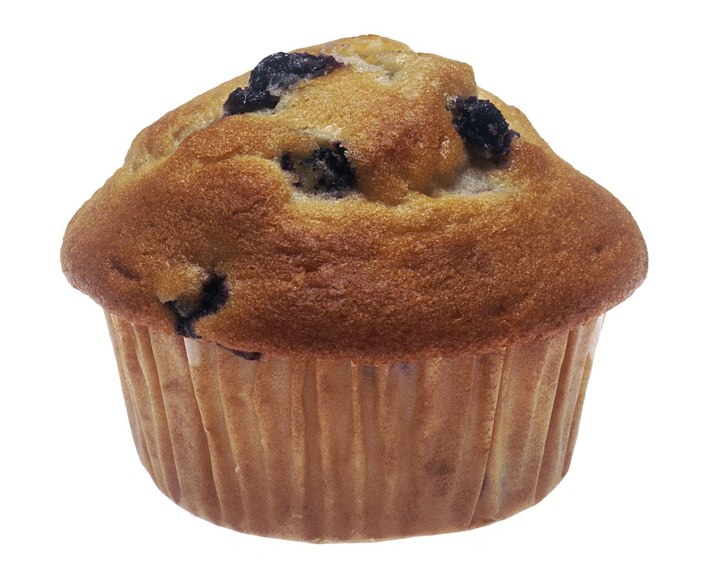

Muffin je druh pečiva menších rozměrů. Tvarově připomíná některé dortíky, není však tak sladký a obecně nemívá polevu. Existují i určité obměny muffinů, například na bázi kukuřičného chleba. Muffin se svými rozměry vejde do dlaně dospělého člověka a je určen ke konzumaci jednou osobou, v rámci jednoho posezení.
